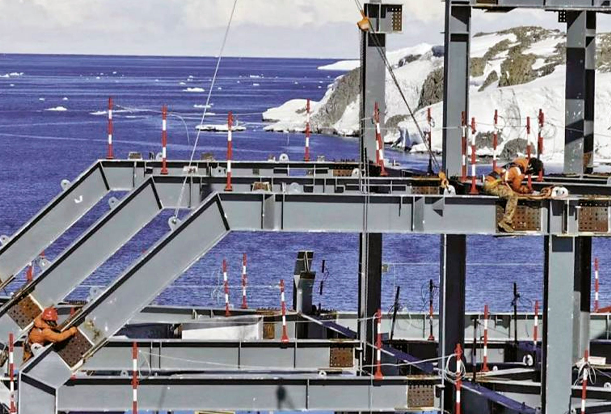
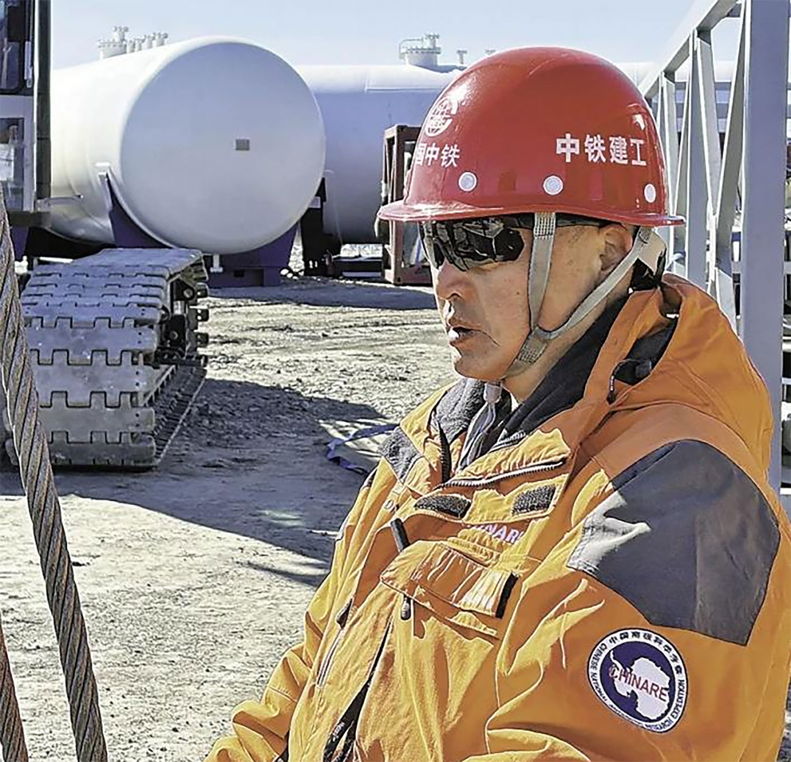
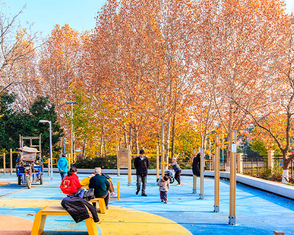
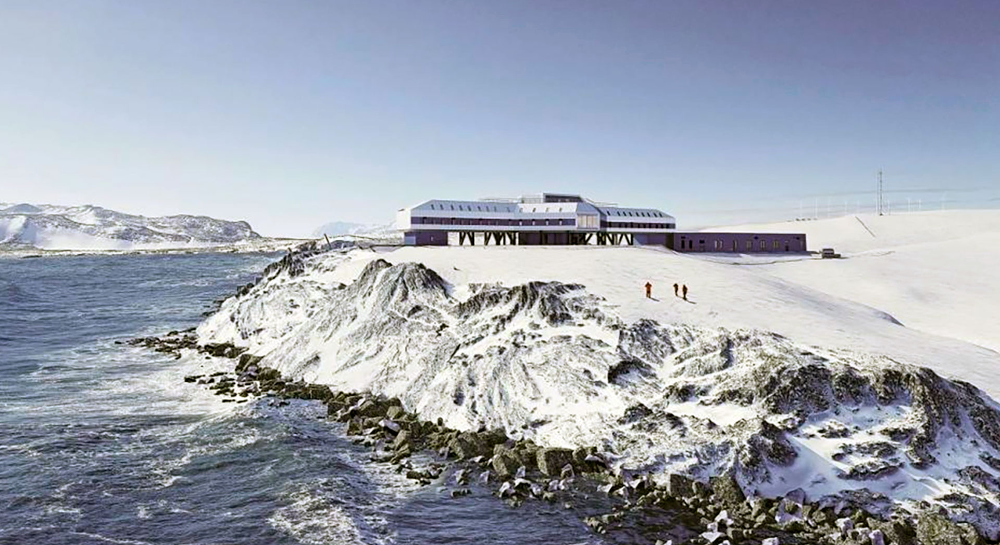

Con el equipo chino detrás de la Estación Qinling, un moderno centro de investigación en la Antártida
Treinta y dos trabajadores de la construcción permanecen durante el invierno en la quinta estación de investigación de China en el continente

La estructura principal de la Estación Qinling de China se encuentra en fase de montaje (China Railway Construction Engineering Group)
Li Xinping
27/2/2025
Mientras los últimos rayos de sol se desvanecían sobre la plataforma de hielo de Ross, la Antártida entraba en su largo invierno polar. En este desolador paisaje de hielo y nieve, la Estación Qinling de China se erguía firme como una robusta arca gris, ya equipada con un sistema de microred, instalaciones de energía de hidrógeno y una red de comunicaciones.
La Estación Qinling es la quinta estación de investigación de China en el continente, cubriendo la ausencia de presencia científica del país en la región del Mar de Ross. Actualmente, 32 trabajadores de la construcción permanecen en el lugar durante el invierno, realizando trabajos de acondicionamiento interior e instalaciones electromecánicas, al tiempo que garantizan el mantenimiento operativo continuo.
Presencia científica
Los esfuerzos de construcción polar de China se remontan a principios de la década de 1990, cuando equipos de China Railway Group, China Construction Technology Consulting Group y otras empresas comenzaron a realizar viajes regulares al sur. Durante las últimas tres décadas, han viajado a la Antártida más de 20 veces, ampliando constantemente la presencia científica de China en la frontera más austral de la Tierra.La Estación Qinling está ubicada en la Isla Inexpresable, donde la temperatura promedio ronda los -20 grados Celsius y puede descender hasta los -45 grados. Fuertes vendavales azotan la isla durante más de 100 días al año. Para hacer frente a estas condiciones extremas, la estación adoptó desde el principio un innovador enfoque de construcción modular prefabricada: las estructuras de acero y los módulos funcionales se fabricaron en China, se transportaron al sur y se ensamblaron en el lugar como bloques de construcción, listos para su uso inmediato tras el montaje.

El jefe de equipo Luo Huangxun trabaja en Qinling (China Railway Construction Engineering Group)
Dado que la soldadura es imposible en la Antártida, todas las estructuras de acero tuvieron que atornillarse. "Incluso apretar un tornillo aquí es una batalla", recordó Xie Shuaishuai, un joven ensamblador de menos de 30 años. Con guantes para protegerse de la congelación, se dio cuenta de que se humedecían rápidamente con el sudor, se congelaban con el viento y se pegaban a sus herramientas. "Tienes que calentar los guantes, ponértelos de nuevo y repetir el proceso una y otra vez", dijo. Al final, apretó 11.000 tornillos de esta manera.
Levantada en 45 días
La construcción de la Estación Qinling comenzó oficialmente el 16 de diciembre de 2023, durante la 40ª expedición antártica de China. En menos de 30 días, se completó la estructura de acero del edificio principal. En 60 días, la estructura principal ya estaba terminada. El proyecto estableció cinco récords en la construcción de estaciones antárticas: la mayor fuerza laboral desplegada, el mayor volumen de materiales manipulados, el edificio individual más grande construido, las condiciones más extremas soportadas y la construcción más rápida lograda.Cuando la 41.ª expedición antártica partió el 1 de noviembre de 2024, más de 100 constructores de China Railway Group y China Construction Technology Consulting Group se unieron a la misión. "La mayoría ya había participado en la 40.ª expedición, y algunos habían trabajado en más de 10 proyectos antárticos", dijo el jefe del equipo, Luo Huangxun.
Luo se unió al equipo de construcción polar de China en 2007. Durante los últimos 18 años, ha completado 13 proyectos en la Antártida, llegando a pasar hasta 17 meses consecutivos en el continente. Tras un agotador viaje de 29 días y 7.570 millas náuticas a través del calor ecuatorial y los turbulentos vientos del oeste, la expedición llegó a la base de investigación china Zhongshan el 30 de noviembre de 2024. Allí, comenzó una operación masiva de descarga: las grúas trabajaron sin descanso mientras los miembros de la tripulación formaban cadenas humanas para transferir los materiales pieza a pieza. En menos de cinco días, se descargaron casi 6.000 toneladas de carga.
La construcción se puso en marcha a toda velocidad. "Esta vez, introdujimos los métodos de construcción más avanzados en la Antártida, integrando el diseño, la fabricación, el transporte y el montaje in situ", dijo Luo.
Una innovación clave fue el uso extensivo de la simulación digital.
En los últimos años, China ha fortalecido la base de la investigación básica, brindando un apoyo estable y a largo plazo a plataformas clave de innovación, equipos destacados y áreas prioritarias. Ha perfeccionado los mecanismos de evaluación de ciclo largo, lo que permite a los investigadores centrarse en grandes preguntas sin distracciones. También ha ampliado el capital paciente para impulsar proyectos de ciencia y tecnología con horizontes amplios e inversión considerable.
Simulación digital
"La Antártida es demasiado remota y la capacidad de transporte demasiado limitada. Cualquier problema inesperado podría descarrilar el cronograma", explicó el gerente de proyecto Zheng Di, del Grupo de Ingeniería de Construcción Ferroviaria de China. Para abordar este problema, el equipo utilizó el modelado de información de construcción (BIM) para perfeccionar los diseños y simular planes de construcción optimizados.
Un ejemplo fue el sistema electromecánico de la estación, que requirió más de 100.000 metros de tuberías. Al dividir el sistema en unidades modulares mediante simulación digital, el equipo redujo la complejidad y aumentó la eficiencia en un 72 %.
El sistema energético está prácticamente completo y comprende turbinas eólicas, paneles solares, almacenamiento de baterías, producción y almacenamiento de hidrógeno y generación de energía mediante pilas de combustible de hidrógeno. "Estos sistemas renovables proporcionarán a la estación Qinling un suministro de energía sostenible y fiable", señaló Zheng. Incluso durante la larga noche polar, pueden suministrar al menos 14 días de energía continua a 30 kilovatios.
Cuando terminó la temporada de construcción de verano, más de 30 miembros de la tripulación se quedaron para mantener la estación en funcionamiento durante el invierno antártico. "Pasar el invierno aquí es mucho más desafiante que trabajar durante la temporada de verano", dijo Luo, que ya ha soportado dos inviernos antárticos. "Nos enfrentamos a 58 días de oscuridad ininterrumpida. Pero cada vez que veo cómo la estación va tomando forma gracias a nuestros esfuerzos, no siento más que orgullo y satisfacción".
Ahora, a sus 59 años, a Luo le preguntan a menudo si planea regresar. Su respuesta se mantiene firme: "Mientras me necesiten y mientras esté en buena forma física, estaré aquí con el equipo en la Antártida".
OTROS TEMAS
Industria
Isla inteligente en un taller de la empresa conjunta SAIC-GM-Wuling (P. D.)
Fábricas inteligentes exploran nuevos modelos de fabricación en China
Los automóviles ya no tienen que construirse en una línea de ensamblaje tradicional. En China, la producción se organiza cada vez más en torno a lo que se conoce como 'islas de fabricación'
Leer más ->
Algodón

Una cosechadora de algodón en Xinjiang
La tecnología impulsa el desarrollo de la industria algodonera de Xinjiang
En la principal región productora de algodón del país, la producción superó por primera vez los seis millones de toneladas y alcanzó el 92,8 % del total nacional
Leer más ->
Automoción

Vehículos validan su rendimiento
Yakeshi se reinventa con nuevas experiencias
Situada en la Mongolia interior, esta ciudad especializada en las pruebas automovilísticas de invierno ha pasado a convertirse en un centro integral de la industria de hielo y nieve
Leer más ->
Ruido

Un parque urbano de Wuhu
Paso firme en el control de la contaminación acústica
Aumenta el porcentaje de áreas urbanas que cumplen con los estándares nacionales de ruido diurno y nocturno, reflejando la 'determinación estratégica' de China en lograr su reducción
Leer más ->

Vista de la estación Qinling de China en la Antártida (China Railway Construction Engineering Group)